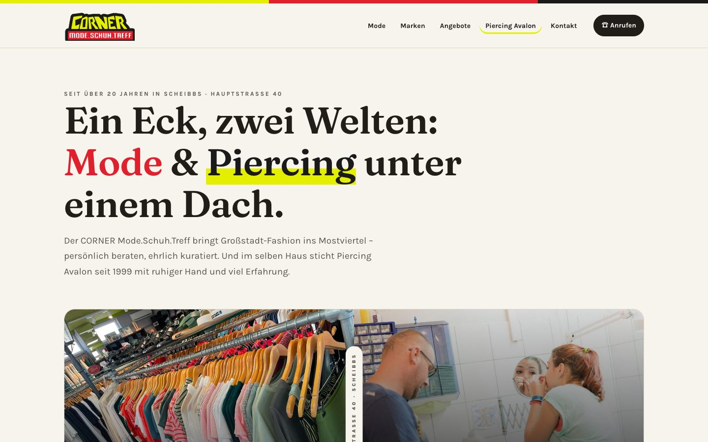
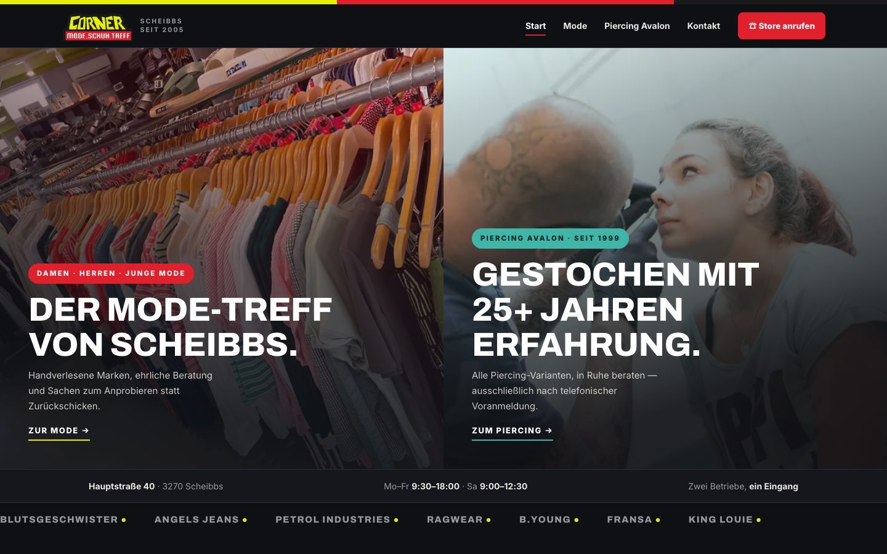
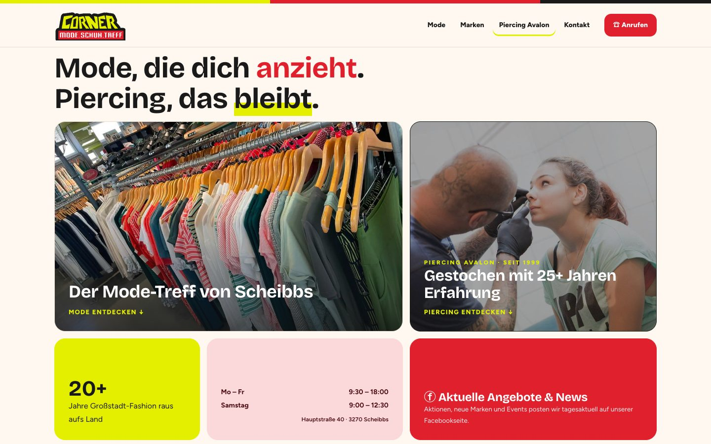
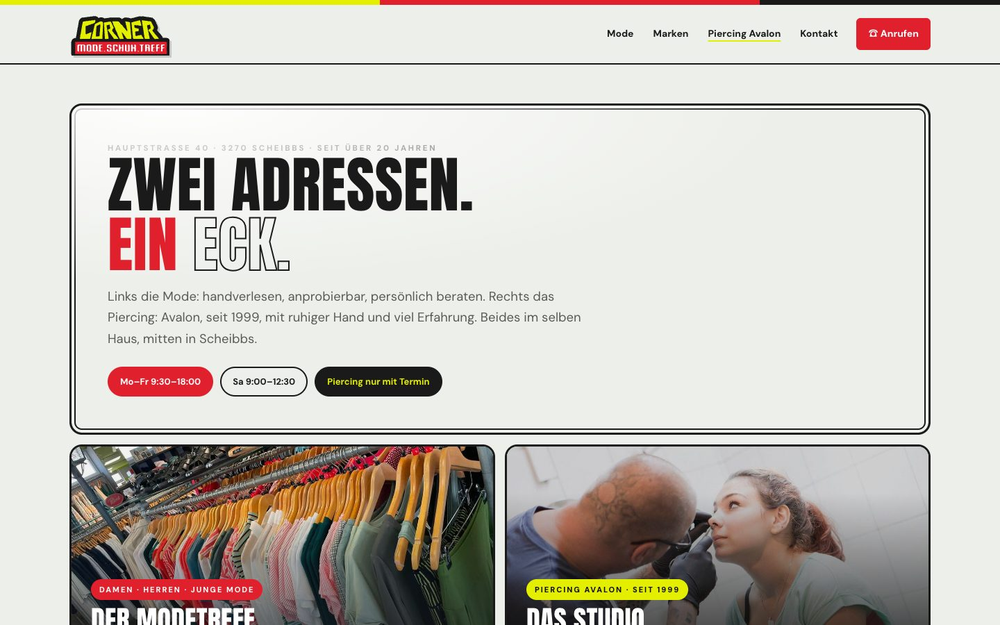
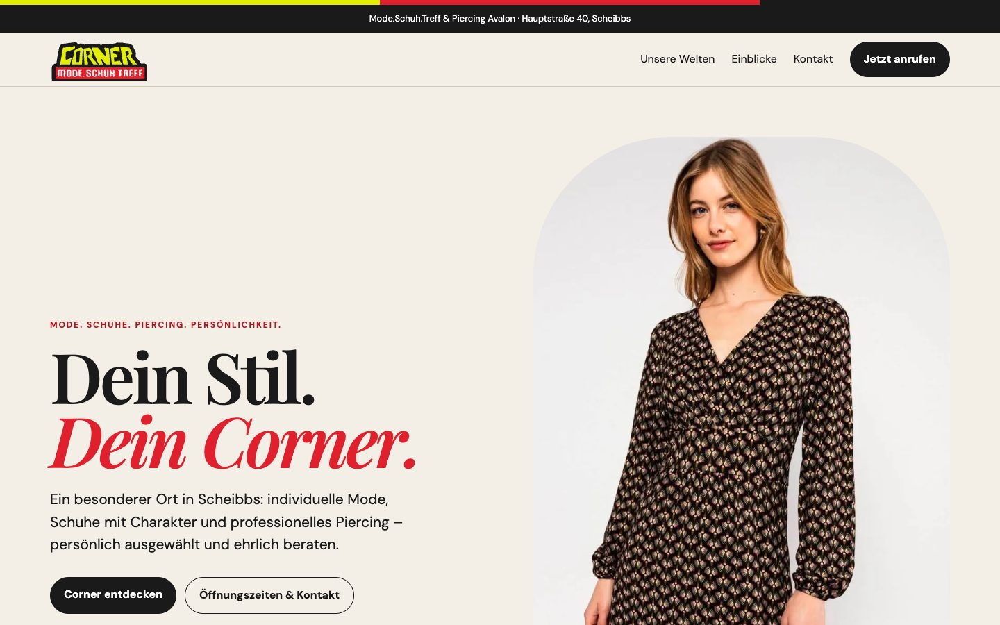
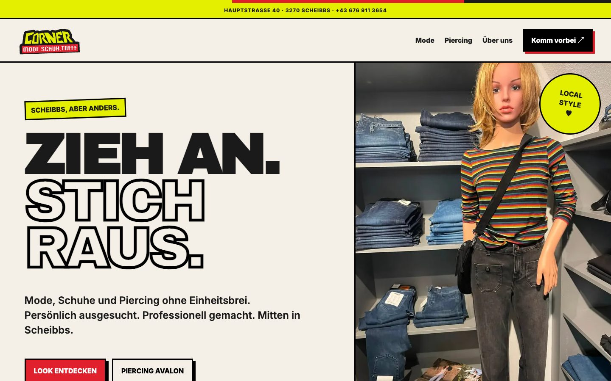

-

Variante AEditorial
Hell und ruhig wie ein Modemagazin: große Serifen-Typografie, viel Weißraum, Mode und Piercing als zwei gleich große Kapitel.
- Stimmung
- Ruhig, hell, kuratiert
- Für wen
- Kundschaft, die in Ruhe stöbert und Beratung schätzt
- Schrift
- Fraunces (Serife) + Karla
- Eigenheit
- Magazin-Rhythmus, Facebook-Aktionen als eigene Rubrik
-

Variante BUrban Split · Version 3
Dunkel und plakativ: geteilte Startseite, Mode links, Piercing rechts, durchgehend in den Logo-Farben.
- Stimmung
- Dunkel, städtisch, plakativ
- Für wen
- Jüngeres Publikum und Piercing-Kundschaft
- Schrift
- Archivo + Inter
- Eigenheit
- Split-Hero, Marken-Laufband, Stats-Leiste
-

Variante CBento
Bunt und übersichtlich: Inhalte in farbigen Kacheln – Öffnungszeiten, Angebote und beide Bereiche auf einen Blick.
- Stimmung
- Freundlich, knapp, alles auf einen Blick
- Für wen
- Schnellentschlossene: Zeiten, Telefon und Angebote sofort sichtbar
- Schrift
- Bricolage Grotesque + Figtree
- Eigenheit
- Kachel-Raster wie ein Handy-Homescreen, kurze Sätze
-

Variante DEmaille
Wie ein altes Emailleschild: gerahmte Flächen in Schwarz und Logo-Rot, kräftige Blockschrift, Mode und Piercing als zwei große Bildtafeln.
- Stimmung
- Kernig, plakativ, ein Hauch Retro
- Für wen
- Stammkundschaft und alle, die Handwerk und Bodenständigkeit schätzen
- Schrift
- Anton (Blockschrift) + DM Sans
- Eigenheit
- Schild-Sprache in kurzen Sätzen, seitlich wischbare Galerien
-

Variante EBoutique Bloom
Warm, persönlich und hochwertig: weiche Formen, Editorial-Typografie und Mode sowie Piercing als zwei gleichwertige Erlebniswelten.
- Stimmung
- Warm, weich, hochwertig
- Für wen
- Boutique-Publikum mit Sinn für Details und persönliche Beratung
- Schrift
- Playfair Display + DM Sans
- Eigenheit
- Organische Formen, große Store-Fotos, ruhiger Lesefluss
-

Variante FLocal Rebel
Laut, jung und selbstbewusst: große Typografie, harte Konturen und leuchtende Farben für eine eigenständige lokale Marke.
- Stimmung
- Laut, jung, selbstbewusst
- Für wen
- Junge Mode, Teens und alle, die Haltung zeigen wollen
- Schrift
- Archivo Black + Inter
- Eigenheit
- Schwarze Konturen, Signalgelb und Rot als Flächen
Mode.Schuh.Treff & Piercing Avalon · Scheibbs
Sechs Richtungen, ein CORNER.
Jeder Entwurf hat sein eigenes Layout, seine eigene Schrift und seinen eigenen Wortlaut – alle mit dem Original-Logo, der Drei-Streifen-Signatur und den CORNER-Farben. Jede Variante ist eine komplette Website: Startseite plus eigene, suchmaschinenoptimierte Unterseiten für Mode und Piercing Avalon, erreichbar über die beiden Hauptmenüpunkte. Einfach anklicken, die Seiten funktionieren auch am Handy.
GelbRotSchwarz – die drei Farbpunkte je Karte zeigen Hintergrund, Akzent und Schriftfarbe der Variante.